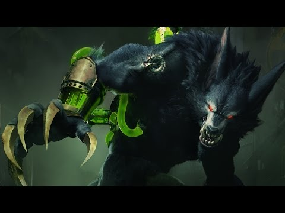

As Habilidades de Warwick

Foto do Warwick
Warwick é um monstro que caça pelas ruas cinzentas de Zaun. Transformado a partir de experimentos agonizantes, seu corpo agora é fundido a um sistema complexo de câmaras e bombas, um maquinário que enche suas veias com fúria química. Ele persegue os criminosos que aterrorizam as profundezas da cidade, movimentando-se pelas sombras. Warwick é atraído por sangue; para ele, esse aroma é enlouquecedor. Ninguém que derrama sangue é capaz de fugir dele.
HABILIDADES
Q - Presas da Fera: Warwick lança-se à frente e morde seu alvo, causando dano com base em sua Vida máxima e curando a si mesmo com o dano causado.
W - Caçada Sangrenta: Warwick percebe inimigos com menos de 50% Vida, recebendo Velocidade de Movimento ao movimentar-se na direção deles e Velocidade de Ataque ao afastar-se deles. Se ficarem com menos de 20% de Vida, ele entra em frenesi e os efeitos são triplicados.
E - Uivo Primitivo: Warwick recebe redução de dano por 2,5 segundos. Ao fim do efeito, ou caso seja reativado, ele uiva, fazendo com que inimigos próximos fujam por 1 segundo.
R - Coerção Infinita: Warwick salta em uma direção (escalando com sua Velocidade de Movimento adicional), suprimindo o primeiro Campeão com que colidir por 1,5 segundo.
Clique aqui para jogar League of Legends
Fonte: https://br.leagueoflegends.com/pt-br/champions/warwick/